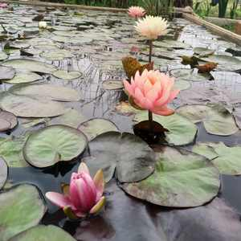
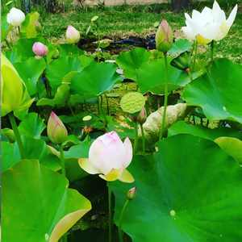
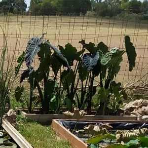
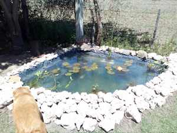

Nuestras Plantas
Nenufares

Lotos

Colocacias

Historia
Un estanque es una pequeña cavidad de agua, natural o artificial, utilizado cotidianamente para proveer al riego, criar peces, nadar, etcétera, o con fines meramente ornamentales.
Los estanques forman parte del dominio público, si son de agua salada y comunican con el mar. Los estanques particulares están sometidos a las leyes generales de la propiedad y de la salubridad pública, y pertenecen al dueño del suelo que cubren. Los peces son un accesorio de los estanques y constituyen bienes muebles por disposición legal. Actualmente, una de las principales utilidades de los estanques es la cría y multiplicación de peces (como tencas, carpas y otros). Un ejemplo de estanque con utilidad paisajística u ornamental es el estanque grande del Retiro en la ciudad española de Madrid. En la imagen se puede apreciar el primero de nuestros estanques, el cual fue modificado debido una mala ubicación en el terreno. Siempre se tiene que planear anticipadamente la ubicación del mismo, siendo indispensable una buena cantidad diaria de luz solar y despeje de árboles, los cuales pueden desprender hojas y frutos sobre el estanque, haciendo que el agua del mismo sufra cambios.
Primer Estanque
